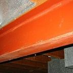
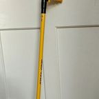

The Inav
Items & Technology From The Legend Of Chris Wiki · A multiverse navigator that just works.
“Welcome to Inav, a multiverse navigator that just works.”
The Inav is a universal navigator and transporter for the multiverse, built by Apple. Only one exists, and it answers only to Steve Jobs. It is the main vehicle of Steve, Kanye West and ChatGPT from Gotham onward.
History
Asked by ChatGPT (who wanted to add it to its "GitHub respiratory"), Steve explained:
the Inav was a project I started with Wozniak in the mid 80's, its why we hit our slump, the Inav was out biggest project yet, working with the Department of Awesomeness (DOA) we were contracted to create universal navigator and transporter for the newly found multiverse
The DOA never used it: "they were dissolved the same day they asked for it." Apple, "knowing our capabilities", kept developing it anyway "until 2008". "Only one article exists.. and that one only answers to me."
Design
The Inav appeared "flying through the sky" as "a vertical pill shaped object. White with a glass outer shell tinted in teal and a apple logo centered in the front." It hovers. On landing it "rotated 180 degrees and opened its back door like a hull wing door."
Inside is a foyer with a zyn storage locker, where Steve parks his Zyn. The interior is "like a mansion", although "the exterior was as big as a phone booth." Refreshments are served from the wall: on request, "a hovering coaster was deployed from the wall servicing Kanye a ice cold diet dr.pepper." The bridge is on the "second floor main deck", where Steve has a "futuristic pilots seat" that spins.
Its "white glassy exterior" is bulletproof: the casino's protection system fired on it and the bullets bounced off.
Capabilities
- Multiverse travel: the Inav flies into self-opening wormholes. The tunnel is lined with "Doritos and mountain dew ads, xbox live cod clip comps and skrilla." It exits through "A giant rift" in the sky.
- Teleportation: on command, Siri responds "Teleporting sir."
- Remote targeting: it can lock onto an AirTag and fire the Ibeam, which first needs an EMP.
- Reconnaissance: at the casino it circled the roof "to get a 360 view of the building."
- Boarding: it can pull up to a hole in a building and lower a ladder.
Journeys
- Gotham City to Sector 1/99 and the casino (The Flashback Chapter, Chapter the Maybe Seventh).
- Escape from the Casino Heist with the Verizon contract on board.
- The casino to the TurboGrafx 16 sector, to sync with the Flip Phone Covenant.
The TurboGrafx 16 universe
The Inav is grabbed by a giant Ultra Hand and set down at the studio of Throats For Thought. Siri announces “Landing complete”. The crew leaves it behind when they follow Scott to his house. The Inav is not mentioned again, and the crew leaves the sector in Tesla roadsters.
Trivia
- Being bigger on the inside than on the outside, and the size of a phone booth, the Inav is widely compared to the TARDIS from Doctor Who.
- "Just works" was a well-known Apple marketing slogan.
- In real life, Jobs left Apple in 1985, the mid 80's. The canon blames the slump on the Inav.
- 2008, the year development ended, is also the year the iPhone 3G was released.
- Fan theory: the iPad (2010) is a failed attempt at a second Inav.
On the Timeline: Steve Jobs and Wozniak start the Inav →
See also
 Steve JobsTurtleneck of algorithms and starlight. One more thing.
Steve JobsTurtleneck of algorithms and starlight. One more thing. Siri (3G)Never update.
Siri (3G)Never update. Steve WozniakThe other Steve.
Steve WozniakThe other Steve. Department of Awesomeness (DOA)Commissioned the Inav. Dissolved immediately.
Department of Awesomeness (DOA)Commissioned the Inav. Dissolved immediately.
The IbeamEMP first. Haircut second. Vault third.The TurboGrafx 16 SectorSixteen bits of destiny.ZynHas its own locker.Diet Dr PepperDayum, this is ice cold.
The Ultra HandA giant one.The Wii CubeA giant box made out of Wii games.